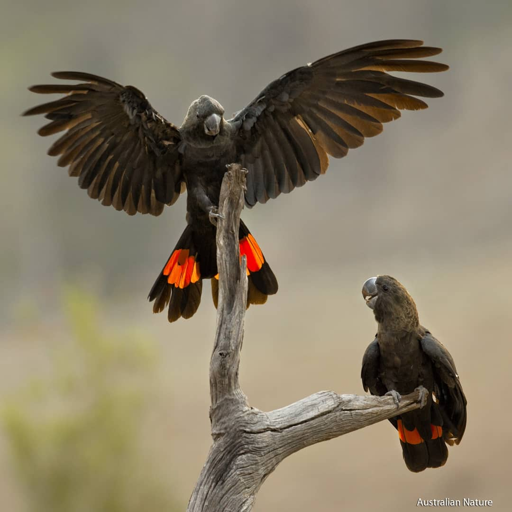

The Australian Bushfires of 2019/2020
Introduction
The Australian busfires of 2019/20, commonly known as the Black Summer, were some of the most devestating on record. More than 18 million hectares of land were burnt, along with 2500+ homes. Tragically, more than 30 people also lost their lives in various blazes over the summer.
Figure 1: A summary of the damage to each state and territory. Source.
Here, we attempt to reveal the intensity and longevity of the fires over that summer. We'll show some snapshots of fire intensity at various places and times across the country. We'll then investigate some of the numbers and statistics relating to the fires.
Maps of fires
New Years Eve
The 2019/20 bushfire season started earlier than usual in August, due to a dry winter. The fires then peaked during December and January. A common misconception is that there was one, single, fire - rather, there were hundreds of individual fires across the summer and across the country.Figure 2: New Years Eve 2019 was one of the worst days of the fires
Figure 2 shows a snapshot of the whole country, at the peak of the fires. The heatmap shows the intensity of the fire as
measured by satellite. Note again the number of different fires. The fires were most commonly spread through Victoria and
NSW, however they were also abundant on the Eastern coast of Queensland, through South Australia and up into Western Australia.
This snapshot is from December 30 2019. On New Year's day,
New Zealanders living on the South Island woke up to large parts of their island being covered in smoke from the
Australian fires.
Kangaroo Island
Figure 3: Kangaroo Island was hit badly by the fires in early 2020.
Kangaroo Island, just off the coast of South Australia, was severly affected by the fires. By early 2020,
around 170,000 hectares of land had been burnt. This corresponds to around a third of the entire island. This
had huge environmental impact, as Kangaroo Island is home to endangered wildlife such as the critically endangered
Kangaroo Island Dunnart, and an endangered subspecies of Glossy Black Cockatoo.

Figure 4: Glossy Black Cockatoos. The endangered Kangaroo Island sub-species was affected by the 2019/20 bushfires.
Numbers and Statistics
So how big were the fires?
Over the last century, the 2019/20 Australian bushfires and the 2021 Russian bushfires dwarf all others. That's not to say that there have only been two major fires this century - all the bushfires on this table are catastrophic. Rather, Figure 5 shows how much larger the most recent two major bushfires were than all the others.Figure 5: The largest bushfires of the 21st Century. Source.
Once numbers start getting larger than what we deal with in our day to day lives, humans are notoriously
bad at visualising how big such numbers really are. Figure 6 should help with understanding
the size of the 2019/20 Australian bushfires.
Figure 6: The Australian 2019/2020 Busfires, compared to other areas.